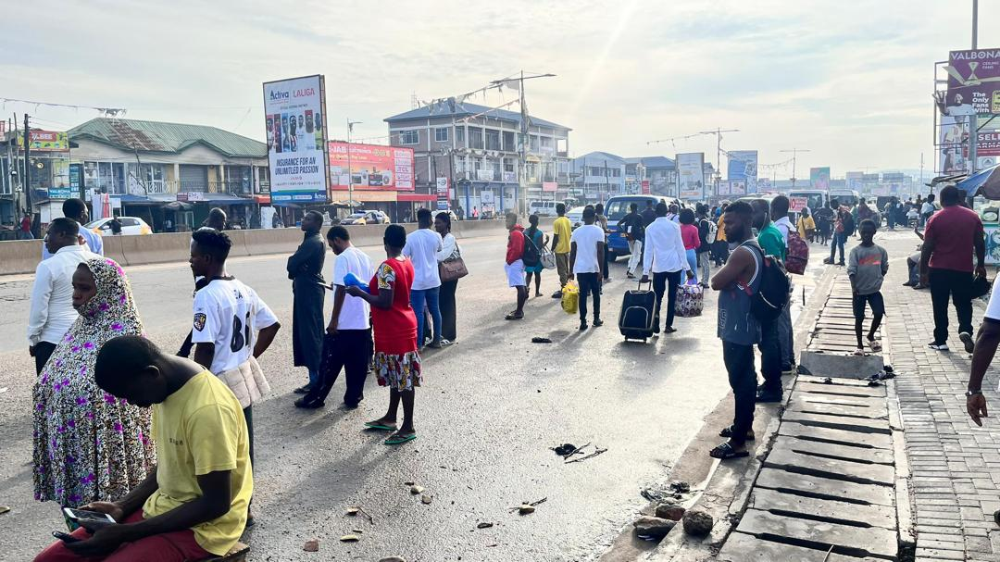
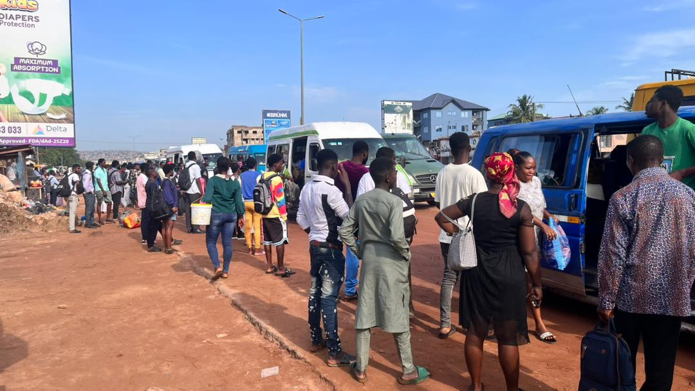
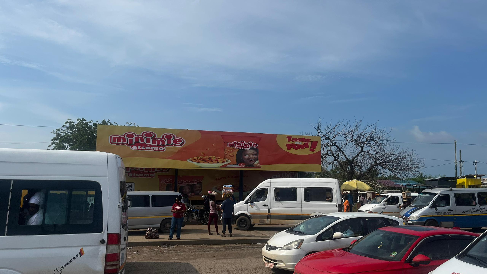
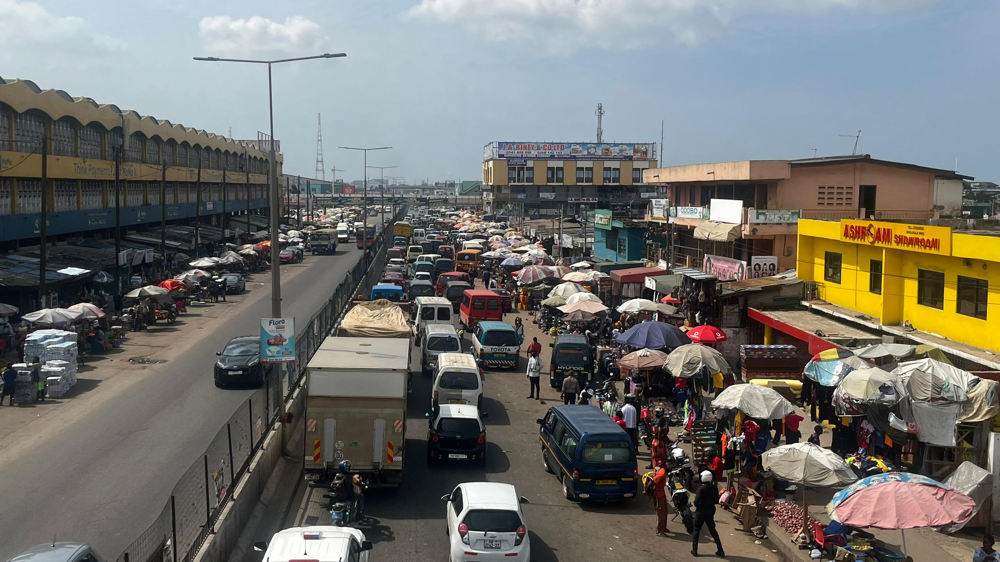
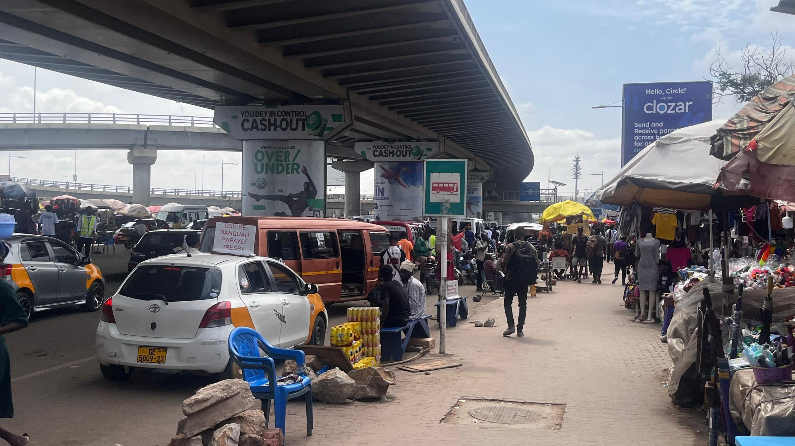

A nation on the move: Ghana’s transport system stretches across forests, cities, and coastlines, carrying hopes, goods, and grievances.
Ghana’s most densely populated region moves millions every day, but when systems break, this is where the fractures show.

This fast-growing town, Kasoa, sits on the edge of Accra, a transport lifeline between the capital and the Central Region. Yet it’s where a new kind of manipulation begins.
One journey, many fares. The fare cut promised 'relief'. But for commuters, it’s more confusion, more cash and no change. Commercial drivers first stop 11.2km east at Old Barrier for GHC 4.50, an unassuming junction that marks the start of segmentation.

Now, drivers insist on stopping mid route at Old Barrier and charging a new fare. What used to be a checkpoint is now a new fare point. The segmentation begins.
A journey repackaged. From Old Barrier to Mallam junction, a short leg of a once-full trip. Another GHC 4.50 fare. Another delay. Another hustle.

A brief pause and another payment. Commuters are told it’s a “different route". Another GHC 4.50 again. The vehicle is the same. The story isn’t.
No sign, no law. There’s no notice, no official fare list, just the voice of the trotro mate shouting a new route.

It’s still the same trotro, same driver. But fares climb like clockwork.
Another GHC 3.50. What was once GH¢10 after the fare cut is now GH¢17, same road, different rules.

The bus arrives. The money is gone and the silence costs more than the fare.